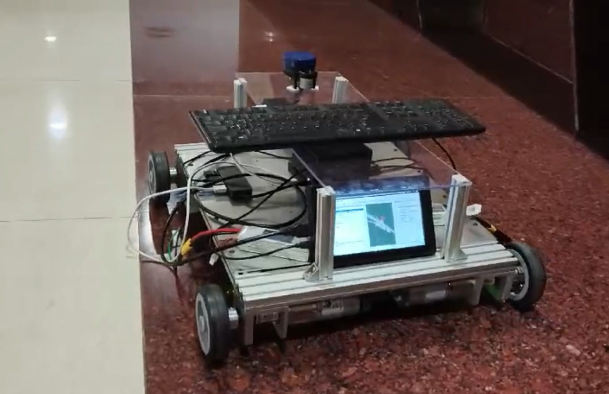

Abstract
Beetle is a robust, 4-wheeled skid-steer autonomous ground vehicle (AGV) designed as a research testbed for the Automation and Robotics Club of BITS Pilani, Hyderabad Campus (ARC BPHC). Built to carry a 60kg payload, it runs on ROS 2 Humble and has a bunch of sensors (LiDAR, RGB-D Camera, and Fisheye lens tracking Camera) to execute SLAM and Path Planning.
1. Introduction: The Need for a Platform
Learning ROS (Robot Operating System) in simulation is valuable, but I wanted to make something that could be used in the real world. At the time, the robotics club that I am a part of, need a testbed for trying out SLAM and Path Planning algorithms on hardware. So I decided to build a robot that could serve as a long-term resource for the club.
The result was Beetle: a 60kg capacity skid-steer bot designed to map and navigate our department buildings.
2. Hardware Architecture
2.1 The Chassis & Drive
Beetle is a 4-wheeled skid-steer vehicle. It steers by varying the speed of the left and right wheel pairs. This kinematic configuration allows for zero-radius turns, making it maneuverable in tight indoor spaces.
- Drive System: High-torque DC motors capable of hauling a 60kg payload.
- Kinematics: Differential drive controller (skid-steer logic).
2.2 The Compute Core
Peforming SLAM and path planning in real-time needs a computer of course.
- Computer: NVIDIA Jetson AGX Xavier.
- OS: Ubuntu 22.04 running ROS 2 Humble.
3. The Sensors
Reliable navigation requires fusing data from multiple sources. Beetle uses a multi-modal sensor setup:
| Sensor | Model | Purpose |
|---|---|---|
| LIDAR | YDLIDAR X2 | Provides 360 degree 2D laser scans (used in LIDAR SLAM) |
| RGBD Camera | Realsense D435 | Provides depth images and point clouds (used in RGBD SLAM) |
| Tracking Camera | Realsense T265 | Provides very stable pose estimation for the robot (used for VIO) |
Why the T265? Wheel odometry on skid-steer robots is inaccurate due to wheel slippage. The T265 solves this by providing Visual-Inertial Odometry that doesn't drift when the wheels slip, serving as the reliable enough odom frame for the navigation stack.
odom4. Software Stack: ROS 2 Humble
4.1 Localization & Mapping (SLAM)
I implemented two distinct SLAM pipelines:
- LiDAR SLAM (SLAM Toolbox): Uses the YDLIDAR X2 to create 2D occupancy grids. This is lightweight and gave good results for standard indoor navigation.
- RGB-D SLAM (RTAB-Map): Uses the RealSense D435 to generate dense 3D maps.
4.2 Path Planning (Nav2)
The Nav2 stack is what I used for this. It handles:
- Global Planner: Computing the shortest path from point A to point B.
- Local Planner: Dynamic obstacle avoidance to follow the path while dodging people or objects.
5. Conclusion
Well, Beetle worked pretty well. Now it serves as a test bed for my robotics club, allowing junior members to mess around with ROS, SLAM and Path Planning.